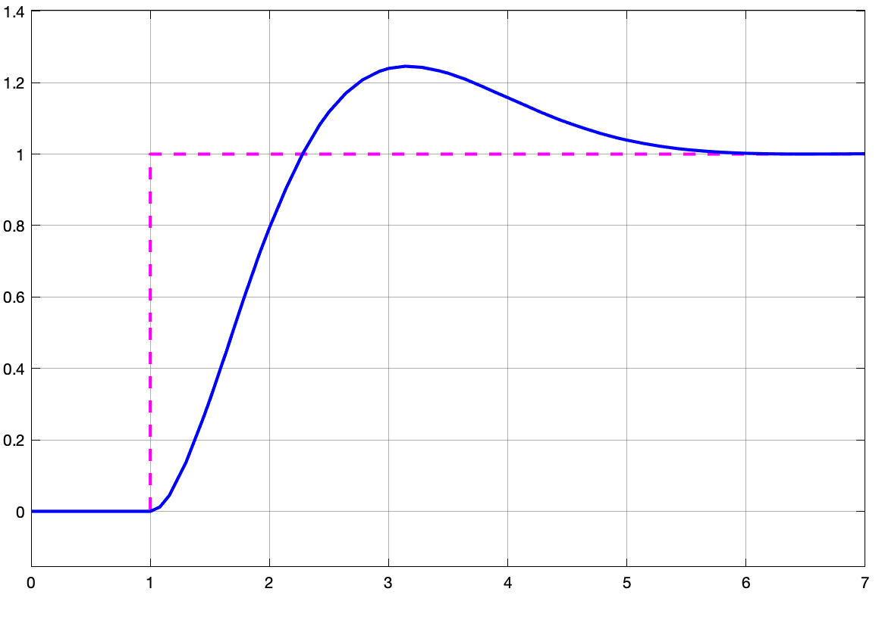

Impacto do BoG(z)
Neste documento se tenta mostrar o papel do sustentando de ordem-zero dentro da modelagem de um controle digital. A primeira visa, qualquer saída de conversor D/A (de Digital para Analógico), "sustenta" a amplitude gerada entre instantes de amostragem (ou entre os instantes nos quais foi comandado).
Desconsiderar a falta desta "sustentação" na amplitude de um sinal entre instantes de amostragem implica que um conversor D/A pudesse gerar impulsos na amplitude desejada, mas sem sustentar o sinal no período entre instantes de amostragem. Motivo pelo qual, é importante incluir na modelagem de um sistema contínio para o sistema discreto ou digital.
Vamos supor que queremos fechar uma malha de controle de velocidade de um simples motor CC com 2 constante de tempo: segundos (da parte elétrica) e 2 segundos da parte mecânica. Vamos supor ainda que este modelo está "normalizado", isto é, que se ingressamos com um sinal de amplitude unitária, a saída (RPM ou rad/s) também será unitário (relação que simplesmente se denomina "ganho DC"). Neste caso, o o ganho DC deste sistema seria unitário. Ingressando estes dados no Matlab para posterior simulação obtemos:
xxxxxxxxxx>> p1=1/2 % polo associado a cte2 (mais lenta, parte mecânica)p1 = 0.5>> p2=1/0.5 % polo associado a cte1 (mais rápida, elétrica)ans = 2>> G=tf(1,poly([-0.5 -2])); % montando a tf do motor/velocidade>> zpk(G)ans = 1 ------------- (s+2) (s+0.5) Continuous-time zero/pole/gain model.>> dcgain(G) % verificando ganho DC desta plantaans = 1>>Este é um sistema do tipo 0, o que significa erro não nulo para entrada degrau. Então vamos acrescentar um controlador PI ao mesmo no momento de fechar sua malha.
Depois de algumas simples tentativas e erro, descobrimos que e permitem alcançar um bom resultado: 4 segundos com 16,3% em 0,163 segundos. Isto pode ser observado num diagrama em blocos simulado usando Simulink.
Vamos aproveitar a acrescentar ao diagrama de blocos anterior, uma versão digital do controlador (considerando o sustentando de ordem zero, com é o correto), e uma outra versão, onde o sustentador é " esquecido" e vamos observar os resultados obtidos.
Obs.: A versão digital do integrador fica:
xxxxxxxxxx>> I=tf(1,[1 0])I = 1 - s Continuous-time transfer function.>> Id=c2d(I,0.5,'matched') % convertendo do plano-s para plano-z usando definição de transformada-ZId = 0.5003 ------ z - 1 Sample time: 0.5 secondsDiscrete-time transfer function.>> Diagrama em blocos usado para as simulações no Simulink (arquivo: motor_controle_velocidade_PI2.slx):

Note na figura anterior, que a primeira malha-fechada corresponde a um controle puramente analógico (usando PI analógico).
O bloco central, representa uma versão digital do mesmo controlador PI anterior. Note o bloco Sustentandor de ordem-zero. Tanto este bloco, quanto o bloco do integrador trabalham com período de amostragem segundos. Na prática deveriámos estar trabalhando com 200 ms para garantir melhores resultados. Mas a idéia neste caso é ascentuar o que ocorre se nos "esquecemos" do bloco sustentador, que é o que ocorre na último bloco (de MF) mostrado na figura anterior.
Se obervamos as saídas geradas (respostas do sistema entre os 3 diferentes modelos), temos:
| Saída sistema contínuo | Saída PI Digital | Saída Modelo Incorreto |
|---|---|---|
 |  |  |
Até este ponto, a diferença não aparenta ser grande, mas observe como o sinal de controle é diferente nos 3 modelos:
onde sinal gerado pelo PI analóigico; sinal (discreto) gerado pelo PI Digital e sinal gerado pelo PI digital mau incorporado à modelagem.
Note que o sinal não é sustentando entre instantes de amostragem, e que o período de amostragem adotado permite perceber que a planta reage de forma livre entre instantes de amostragem à este tipo de sinal. A planta (no terceiro bloco) se comporta como se estivesse recebendo uma sequencia de trem de impulsos e não entradas defrau com nova amplitude a cada instante de amostragem como é o caso de .
Fernando Passold, em 19/05/2023.